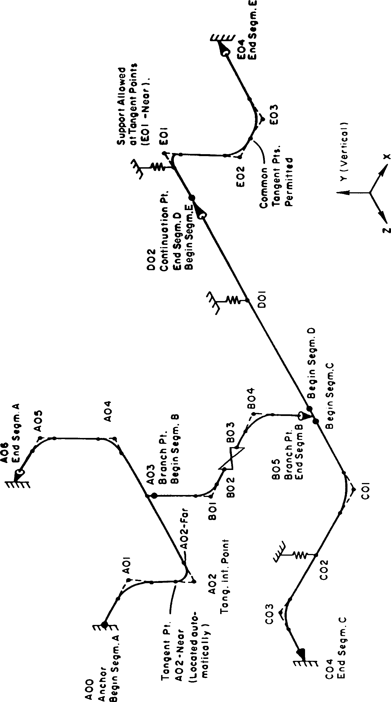

Understanding Pipe Segments
Each piping system is divided into a number of segments. As an example, the sample model shown below contains five segments labeled A through E. Piping models are entered into the program, segment by segment. They may be extended or modified at any time by either adding more segments or changing existing ones. The segments are labeled automatically (A through E in the example). If more than twenty-six segments are entered, the additional ones are labeled AA, AB, AC and so on.
Although most of the piping segment definition is handled automatically with AutoPIPE, in some circumstances it is advantageous to plan the model in advance and divide it into logical “segments” before creating the system (see ‘Rules for defining Pipe Segments’). Typically, a segment would begin and end at anchor points or a branch connection. However, as shown in Figure 2-1 below, at point D02, a pipeline may be divided into two or more contiguous segments. Whenever a tee/branch is inserted, AutoPIPE automatically assigns a new segment identifier. Each new segment begins with a different alpha character, making it easier for node numbering and easier to keep track of segments when reviewing input listings or output results.
When defining a new system, AutoPIPE automatically displays the first Segment screen (the first segment is segment A). In this screen, the user must specify starting X, Y, Z coordinates of the Segment and input a Pipe identifier name. A Pipe identifier is used to assign properties. The Pipe identifier can be any name that the user wishes to use. It is a good idea to choose a meaningful name such as the first few letters of a line ID or something like 8”std (indicating 8” nominal diameter, standard schedule wall thickness) to help you keep track of pipe properties when reviewing the model.
These properties will be applied to all components attached to that pipe identifier until otherwise specified by inputting a new pipe identifier name in one of the component dialogue screens. After inputting a new Pipe identifier name, the Pipe properties dialogue screen will automatically be displayed for input. For example, if you define a Pipe identifier as a 4-inch line, then all following components will default to those same properties until the user types in a new Pipe identifier name on a component dialogue. A segment can be made up of multiple pipe identifiers.
Existing Pipe properties can be easily modified using either Modify > Properties > Pipe Properties (which modifies that Pipe Identifier throughout the entire model, wherever it was used) or by graphical selection of a range of points and Modify> Properties > Pipe Properties Over Range.
